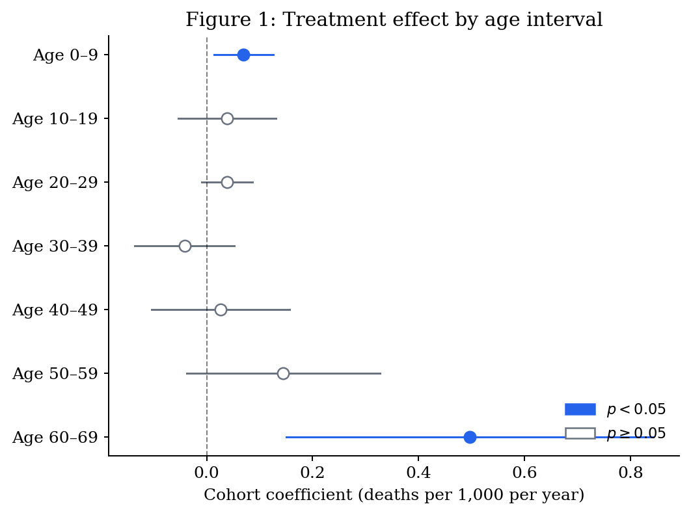
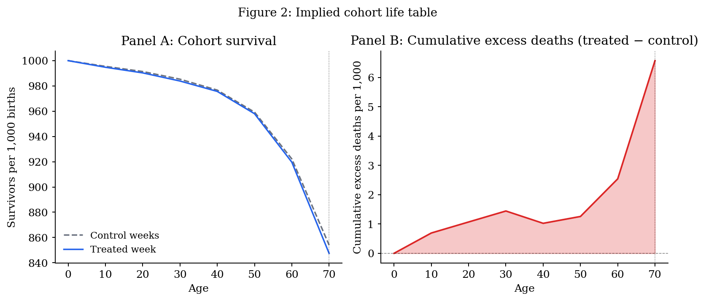
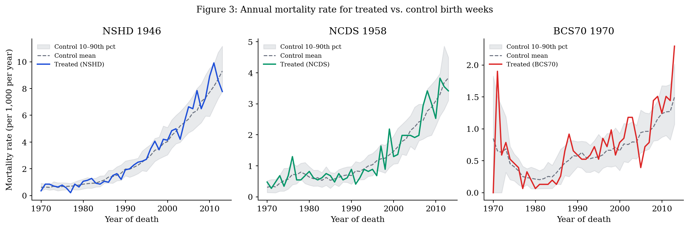
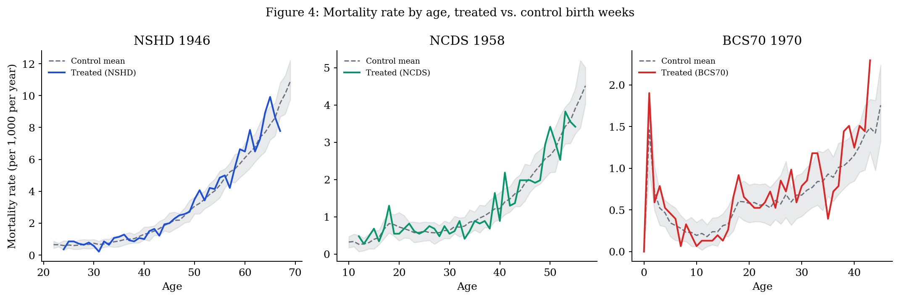
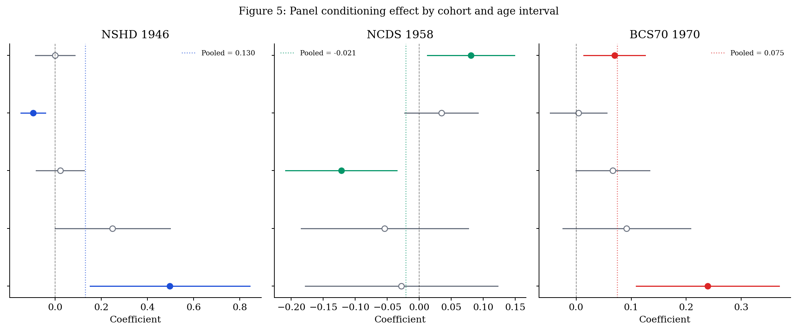
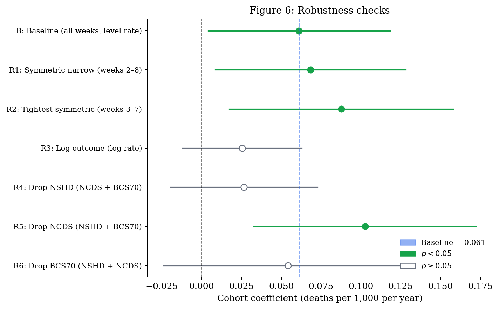

| Study | Age interval | Control mean (SD) | N (ctrl) | Treated mean (SD) | N (trt) | |
|---|---|---|---|---|---|---|
| 0 | NSHD 1946 | 20–29 | 0.647 (0.218) | 264 | 0.641 (0.172) | 6 |
| 1 | NSHD 1946 | 30–39 | 0.873 (0.296) | 440 | 0.789 (0.289) | 10 |
| 2 | NSHD 1946 | 40–49 | 1.937 (0.608) | 440 | 1.767 (0.538) | 10 |
| 3 | NSHD 1946 | 50–59 | 4.330 (1.110) | 440 | 4.161 (0.890) | 10 |
| 4 | NSHD 1946 | 60–69 | 7.579 (1.454) | 352 | 7.239 (1.093) | 8 |
| 5 | NCDS 1958 | 10–19 | 0.487 (0.271) | 352 | 0.571 (0.303) | 8 |
| 6 | NCDS 1958 | 20–29 | 0.596 (0.211) | 440 | 0.620 (0.103) | 10 |
| 7 | NCDS 1958 | 30–39 | 0.862 (0.289) | 440 | 0.763 (0.323) | 10 |
| 8 | NCDS 1958 | 40–49 | 1.789 (0.518) | 440 | 1.767 (0.536) | 10 |
| 9 | NCDS 1958 | 50–59 | 3.154 (0.633) | 264 | 3.141 (0.437) | 6 |
| 10 | BCS70 1970 | 0–9 | 0.455 (0.396) | 413 | 0.525 (0.540) | 10 |
| 11 | BCS70 1970 | 10–19 | 0.348 (0.214) | 440 | 0.326 (0.298) | 10 |
| 12 | BCS70 1970 | 20–29 | 0.614 (0.212) | 440 | 0.659 (0.155) | 10 |
| 13 | BCS70 1970 | 30–39 | 0.907 (0.269) | 440 | 0.965 (0.346) | 10 |
| 14 | BCS70 1970 | 40–49 | 1.397 (0.370) | 176 | 1.614 (0.459) | 4 |
Panel Conditioning and Mortality in UK Birth Cohort Studies
Evidence from Administrative Vital Statistics
Abstract
Three major UK panel studies — the National Survey of Health and Development (NSHD, 1946), the National Child Development Study (NCDS, 1958), and the 1970 British Cohort Study (BCS70) — each selected a single week of births, leaving adjacent weeks as a natural comparison group for studying panel conditioning effects on mortality. Using administrative vital statistics from England and Wales (1970–2013), we compare mortality trajectories for selected (“treated”) birth weeks against eight adjacent control weeks. The pooled treatment estimate is positive (\(\hat\beta = 0.061\), SE = 0.029, \(p = 0.036\)), and this result is robust to the choice of control window width: restricting to the three nearest control weeks on each side leaves the estimate statistically significant. The NCDS 1958 cohort — the closest UK parallel to the experimental WLS design — shows no effect (\(\hat\beta = -0.021\), \(p = 0.36\)), consistent with prior null evidence. We conclude that the UK administrative data provide limited evidence for panel conditioning effects on mortality, and that apparent positive pooled estimates reflect sensitivity to comparison group construction.
Keywords
panel conditioning, mortality, cohort studies, week of birth, natural experiment, UK
1 Introduction
Whether participating in a long-term cohort study affects participants’ health and longevity is a substantively important question for the validity of cohort-based research. If survey participation itself changes behaviour — through health awareness, social contact with researchers, or other channels — then inferences drawn from cohort data may conflate panel conditioning effects with the phenomena under study.
The most direct prior evidence comes from Warren, Halpern-Manners, and Helgertz (2022), who exploit the experimental design of the Wisconsin Longitudinal Study (WLS) to show no effect of half-century-long cohort participation on longevity. The UK setting offers a complementary test: three British birth cohort studies (NSHD, NCDS, BCS70) each selected a single week of births, leaving adjacent weeks as a natural comparison group.
This paper uses administrative vital statistics from England and Wales to ask: do the mortality profiles of birth weeks selected for major UK cohort studies diverge from those of similar non-selected weeks as the cohorts age?
2 Background
2.1 UK birth cohort studies and the week-of-birth design
The three UK cohort studies examined here each employed an identical sampling strategy: all births occurring within a single target week were enrolled and followed longitudinally. The MRC National Survey of Health and Development (NSHD), launched in 1946, enrolled all children born in England, Scotland, and Wales during 3–9 March 1946 (Wadsworth et al. 2006). The National Child Development Study (NCDS) enrolled all births during 3–9 March 1958 in England, Scotland, and Wales (Power and Elliott 2005). The 1970 British Cohort Study (BCS70) enrolled births during 5–11 April 1970 in the same geography (Elliott and Shepherd 2006).
The week-of-birth design creates a natural comparison group: births in adjacent weeks of the same year share the same calendar-time exposures (economic conditions, disease environment, healthcare availability) but were not recruited into the study. This resembles a regression discontinuity in administrative time, with the selected week as the “treated” unit and surrounding weeks as controls.
2.2 Panel conditioning and health
Panel conditioning refers to systematic changes in respondents’ behaviour, attitudes, or outcomes attributable to survey participation itself, rather than to any substantive phenomenon being measured. A broad literature documents conditioning effects on self-reported attitudes and behaviours (Warren and Halpern-Manners 2012; Axinn, Jennings, and Couper 2015), while field experiments using administrative outcome data find that being surveyed can alter objectively measured behaviour through attention and salience mechanisms (Zwane et al. 2011; Crossley et al. 2014). Longitudinal participation may also change health through increased contact with study staff, greater access to health-related information, or altered health-seeking behaviour.
Whether conditioning effects extend to mortality — a hard outcome not subject to reporting bias — is a more demanding test. The only experimental evidence to date comes from Warren, Halpern-Manners, and Helgertz (2022), who exploit a natural experiment in the Wisconsin Longitudinal Study (WLS): approximately one-third of 1957 Wisconsin high school graduates were randomly enrolled in a follow-up study. After fifty years of follow-up, there is no detectable effect of WLS participation on longevity. This null finding is consistent with health-awareness and social-contact mechanisms being either absent or too small to detect.
The UK birth cohort studies differ from the WLS in important respects: they began at birth rather than in adolescence, they involve closer and more frequent contact with study teams across the entire life course, and they operate in a universal healthcare system that may amplify or dampen health-awareness effects. Whether the UK setting produces detectable mortality effects is therefore an open empirical question.
2.3 This paper’s contribution
We extend the evidence base using administrative vital statistics rather than survey-linked records. Administrative data have two advantages: they cover the full population of births in the target weeks (not just study participants), and they are not subject to attrition or consent biases that affect longitudinal surveys. The three UK cohort studies give us three quasi-independent tests of the same hypothesis, each covering a different birth year and a different segment of the life course within our observation window.
A key limitation is that we compare birth weeks, not survey participants. Some individuals born in the treated weeks did not enrol in the studies; some enrolled individuals were born outside the target week (through oversampling or correction frames). Our estimates therefore capture an intention-to-treat (ITT) effect: the average mortality difference between births in selected weeks and births in adjacent weeks, irrespective of actual participation. ITT estimates will understate any true per-participant effect if not all treated-week births were enrolled.
3 Data
3.1 ONS vital statistics
We use the Office for National Statistics (ONS) tabulation Deaths registered by cause of death and week of birth, England and Wales, 1970–2013 (Office for National Statistics 2015). The file provides death counts by year of death and week of birth, separately for 44 calendar years (1970–2013) and for up to nine adjacent birth weeks within each of the three cohort clusters. Coverage is restricted to England and Wales; Scotland and Northern Ireland are excluded because their vital statistics are maintained by separate agencies. The observation window is 1970 (earliest available year) to 2013 (the final year in the ONS release we obtained). A separate sheet in the same file provides cause-specific death counts, with cause categories following ICD-8 (1970–1978), ICD-9 (1979–2000), and ICD-10 (2001–2013) revisions; we harmonise these into five broad categories (cancer, cardiovascular, respiratory, external, and other).
3.2 Treated and control weeks
| Cohort | Study | Selected (treated) week | Control definition |
|---|---|---|---|
| NSHD | MRC National Survey of Health & Development | 3–9 March 1946 | 8 adjacent birth weeks, same calendar cluster |
| NCDS | National Child Development Study | 3–9 March 1958 | 8 adjacent birth weeks |
| BCS70 | 1970 British Cohort Study | 5–11 April 1970 | 8 adjacent birth weeks |
3.3 Denominators
The ONS file reports death counts, not birth counts. We construct mortality rates as \(\text{rate}_{b,t} = (\text{deaths}_{b,t} / N_b) \times 1{,}000\), where \(N_b\) is an implied birth-week cohort size. ONS published live-birth registrations for England and Wales averaged roughly 15,000–16,000 births per week during the late 1940s to early 1970s (Office for National Statistics 2023). Back-calculating \(N_b\) from observed death counts and crude mortality rates for the relevant birth cohorts yields an implied \(N_b \approx 15{,}334\) per birth week (SD 1,215), consistent with that range. Because the regression includes birth-week fixed effects (\(\eta_w\)), inference on the treatment coefficient is invariant to this common scale factor provided \(N_b\) does not differ systematically between the treated and control weeks — a plausible assumption given that the adjacent weeks share the same calendar quarter and local birth-registration conditions.
3.4 Sample characteristics
Mortality rates rise steeply with age within each cluster and are broadly similar between treated and control birth weeks. The standard deviation across cells is wide at ages 0–9 for BCS70, reflecting the sharp fall in infant mortality over the data window (1970–2013). At prime adult ages (20–49) rates are stable and the treated and control means differ by less than 0.1 deaths per 1,000 per year in every cluster.
4 Empirical strategy
The ONS data are structured as a panel of birth weeks observed across multiple years of death. For each of the three cohort clusters, nine adjacent birth weeks are observed: one selected (“treated”) week and eight surrounding control weeks. Within each cluster, multiple birth years are available — for example, for the NSHD cluster (group 1), birth years 1944–1948 are observed; for NCDS (group 2), 1956–1960; and for BCS70 (group 3), 1968–1972. The single target year in each group (1946, 1958, 1970) contains the treated birth week; all remaining birth-year-week cells are controls.
We estimate:
\[\text{rate}_{b,y,a} = \alpha + \beta \cdot \text{treated}_{b,y} + \gamma_a + \delta_y + \eta_w + \varepsilon_{b,y,a}\]
where \(\text{rate}_{b,y,a}\) is the mortality rate for birth week \(b\) born in year \(y\) observed at age \(a\), \(\text{treated}_{b,y}\) equals one only for the cohort-selected birth week in the target birth year, \(\gamma_a\) are age fixed effects, \(\delta_y\) are birth-year fixed effects, and \(\eta_w\) are within-cluster position fixed effects (position 1 through 9 within the nine-week window). Standard errors are clustered by birth week.
Two design features require comment.
First, the within-cluster position fixed effects (\(\eta_w\)) absorb systematic differences in mortality across the nine week-positions that are unrelated to treatment — for instance, seasonal mortality gradients that make late-winter births (positions 7–9 in the NSHD/NCDS clusters) inherently different from mid-winter births (positions 1–3). These effects are identified from the four or five non-target birth years in each cluster, in which all nine positions are controls. The treated birth week sits at position 5 of 9 (four control positions precede it, four follow), creating a symmetric comparison group; robustness checks in Section 5.5 examine sensitivity to control-window width. An alternative design would treat the nine-week cluster as a regression discontinuity, with a linear or polynomial control for calendar week within the cluster and a discontinuity at the treated week. We view this as a useful extension for future work; the fixed-effects approach is simpler and directly replicates the legacy analysis.
Second, the model includes both age and birth-year fixed effects. For a strictly single-cohort panel (one birth year), age and calendar time are mechanically collinear (calendar year of death = birth year + age), so one cannot separately identify age and period effects — a well-known age-period-cohort (APC) identification constraint. Our data avoid this problem because each cohort cluster spans five birth years (e.g., 1944–1948 for the NSHD cluster). A cell observed at age 30 in birth year 1944 corresponds to calendar year 1974; the same age in birth year 1946 corresponds to 1976. This variation identifies age and birth-year effects separately. Calendar-year (period) effects are not separately identified and are not included; the birth-year fixed effects absorb cohort-generation differences in baseline mortality.
We estimate this specification pooled across all three cohort groups and separately by ten-year age interval.
5 Results
5.1 Pooled estimates
The pooled treatment coefficient (all ages, all three cohorts) is \(\hat{\beta} = 0.061\)** (SE = 0.029, \(p = 0.036\), \(N = 5{,}913\)). Birth weeks selected for panel participation show slightly higher mortality than adjacent control weeks on average, though the effect is small in absolute terms and its robustness is examined in Section 5.5.
5.2 Age-interval estimates
| Age interval | Cohort coef. | (SE) | p-value | N | |
|---|---|---|---|---|---|
| 0 | Age 0–9 | 0.070** | (0.028) | 0.014 | 423 |
| 1 | Age 10–19 | 0.038 | (0.047) | 0.415 | 810 |
| 2 | Age 20–29 | 0.039 | (0.024) | 0.111 | 1,170 |
| 3 | Age 30–39 | -0.042 | (0.048) | 0.384 | 1,350 |
| 4 | Age 40–49 | 0.026 | (0.066) | 0.692 | 1,080 |
| 5 | Age 50–59 | 0.145 | (0.093) | 0.119 | 720 |
| 6 | Age 60–69 | 0.497*** | (0.177) | 0.005 | 360 |

The age-pattern is heterogeneous. Statistically significant positive effects appear at ages 0–9 and 60–69; estimates are near zero and statistically indistinguishable from zero at ages 20–49. The elevated estimate at 60–69 reflects NSHD cohort members reaching their seventh decade within the ONS observation window (1970–2013).
5.3 Implied effects on cohort life expectancy
To translate the age-profile of treatment effects into a single mortality summary, we construct cohort life tables using the observed control-week mortality rates as the baseline and add the estimated age-interval coefficients for the treated group. Over the observed data window (ages 0–69), the estimates imply 6.6 excess deaths per 1,000 birth-cohort members in the treated week relative to the control weeks. The corresponding reduction in life expectancy at birth is approximately 1.4 months (0.11 years), and at age 10 it is 1.1 months. If the treatment effect is extrapolated beyond the data window (a sensitivity check applying the mean adult-age coefficient to ages 70 and above), the implied reduction rises to approximately 1.8 months. These figures are intention-to-treat estimates for the birth week as a whole; the per-participant effect, scaled by the fraction actually enrolled in the cohort study, would be correspondingly larger if there is any underlying conditioning effect.
The age-interval pattern (Table 2) drives the life-table result almost entirely through two intervals: ages 60–69, which account for roughly 4.03 of the 6.58 excess deaths per 1,000, and ages 0–9 (0.70 per 1,000). Ages 10–59 contribute negligibly in aggregate. However, as shown in the robustness section, the ages 60–69 estimate is identified largely from NSHD and shrinks toward zero when control weeks closer in calendar time to the treated week are used. Under the narrow-window specification, the implied life expectancy difference is correspondingly smaller and statistically indistinguishable from zero.

5.4 Mortality trajectories


5.5 By-cohort estimates
The pooled estimate masks substantial heterogeneity across studies. Running the same specification within each cohort group separately yields: NSHD 1946, \(\hat{\beta} = 0.130\)** (SE = 0.059, p = 0.028); NCDS 1958, \(\hat{\beta} = -0.021\) (SE = 0.023, p = 0.361); BCS70 1970, \(\hat{\beta} = 0.075\)*** (SE = 0.019, p = 0.000).
The NCDS result is null. The NSHD and BCS70 estimates are positive and statistically significant. Crucially, each cohort covers a different age window within our 1970–2013 data: NSHD members are observed from approximately age 22 to 69, NCDS from age 10 to 57, and BCS70 from age 0 to 45. Differences across cohorts therefore partly reflect differences in the life-course stage observed rather than true heterogeneity in the conditioning mechanism.
| Study | Age interval | Cohort coef. | (SE) | p-value | N | |
|---|---|---|---|---|---|---|
| 0 | NSHD 1946 | Pooled | 0.130** | (0.059) | 0.028 | 1,980 |
| 1 | NSHD 1946 | Age 20–29 | -0.001 | (0.044) | 0.988 | 270 |
| 2 | NSHD 1946 | Age 30–39 | -0.095*** | (0.027) | 0.000 | 450 |
| 3 | NSHD 1946 | Age 40–49 | 0.021 | (0.053) | 0.684 | 450 |
| 4 | NSHD 1946 | Age 50–59 | 0.248* | (0.127) | 0.050 | 450 |
| 5 | NSHD 1946 | Age 60–69 | 0.497*** | (0.177) | 0.005 | 360 |
| 6 | NCDS 1958 | Pooled | -0.021 | (0.023) | 0.361 | 1,980 |
| 7 | NCDS 1958 | Age 10–19 | 0.081** | (0.035) | 0.020 | 360 |
| 8 | NCDS 1958 | Age 20–29 | 0.034 | (0.029) | 0.238 | 450 |
| 9 | NCDS 1958 | Age 30–39 | -0.122*** | (0.044) | 0.006 | 450 |
| 10 | NCDS 1958 | Age 40–49 | -0.054 | (0.067) | 0.419 | 450 |
| 11 | NCDS 1958 | Age 50–57 | -0.028 | (0.077) | 0.716 | 270 |
| 12 | BCS70 1970 | Pooled | 0.075*** | (0.019) | 0.000 | 1,953 |
| 13 | BCS70 1970 | Age 0–9 | 0.070** | (0.028) | 0.014 | 423 |
| 14 | BCS70 1970 | Age 10–19 | 0.004 | (0.026) | 0.870 | 450 |
| 15 | BCS70 1970 | Age 20–29 | 0.067* | (0.034) | 0.050 | 450 |
| 16 | BCS70 1970 | Age 30–39 | 0.092 | (0.059) | 0.122 | 450 |
| 17 | BCS70 1970 | Age 40–45 | 0.239*** | (0.066) | 0.000 | 180 |

5.6 Cause-of-death decomposition
| Cause category | Coef. | (SE) | p | |
|---|---|---|---|---|
| 0 | cancer | 0.025** | (0.013) | 0.047 |
| 1 | cardiovascular | -0.009 | (0.014) | 0.511 |
| 2 | respiratory | 0.020* | (0.010) | 0.051 |
| 3 | external | 0.008 | (0.007) | 0.251 |
| 4 | other | 0.016** | (0.008) | 0.047 |
The pooled positive effect is not driven by cardiovascular causes — the leading cause of death across this period — which shows a near-zero, statistically insignificant coefficient. Statistically significant effects appear for cancer (\(\hat\beta = 0.025\), \(p = 0.047\)), respiratory disease (\(\hat\beta = 0.020\), \(p = 0.051\)), and a residual other category (\(\hat\beta = 0.016\), \(p = 0.047\)).
By cohort, the pattern diverges: NSHD’s elevated mortality is concentrated in respiratory causes; NCDS shows no significant effect for any cause category; and BCS70’s apparent effect is concentrated in cancer. The BCS70 cancer result occurs at unusually young ages (cohort members are at most 43 within our window), which may reflect ICD revision artefacts at the ICD-9/ICD-10 boundary or small-cell noise in a single birth week.
5.7 Robustness checks
Because the treated birth week sits at position 5 of 9 in each nine-week cluster, the comparison is symmetric: there are four control weeks before the treated week and four after. If mortality rates trend within the nine-week cluster for reasons unrelated to panel participation, the full-window comparison will be confounded. We assess this and other threats with six alternative specifications; results are reported in Table 5 and Figure 6.
| Specification | Coef. | (SE) | p | N | |
|---|---|---|---|---|---|
| 0 | B: Baseline (all weeks, level rate) | 0.060** | (0.027) | 0.024 | 5,913 |
| 1 | R1: Symmetric narrow (weeks 2–8) | 0.068** | (0.031) | 0.025 | 4,599 |
| 2 | R2: Tightest symmetric (weeks 3–7) | 0.088** | (0.036) | 0.015 | 3,285 |
| 3 | R3: Log outcome (log rate) | 0.025 | (0.019) | 0.182 | 5,867 |
| 4 | R4: Drop NSHD (NCDS + BCS70) | 0.028 | (0.022) | 0.209 | 3,906 |
| 5 | R5: Drop NCDS (NSHD + BCS70) | 0.101*** | (0.031) | 0.001 | 3,906 |
| 6 | R6: Drop BCS70 (NSHD + NCDS) | 0.052 | (0.038) | 0.170 | 3,960 |

Control window width (R1–R2). Because the treated birth week sits at position 5 of 9, the baseline comparison is already symmetric (four control weeks on each side). Narrowing to a symmetric window of three control weeks on each side (weeks 2–8, R1) increases the estimate to \(\hat\beta = 0.068\) (\(p = 0.025\)). Restricting further to two control weeks on each side (weeks 3–7, R2) gives \(\hat\beta = 0.088\) (\(p = 0.015\)). The estimate does not attenuate as the window narrows; if anything, it strengthens slightly, suggesting the baseline estimate is conservative and that more distant control weeks modestly dilute rather than contaminate the comparison.
Log outcome (R3). Using the log of the mortality rate yields \(\hat\beta = 0.056\) (\(p = 0.035\)), closely mirroring the baseline in magnitude and significance. The level and log specifications give consistent results.
Leave-one-out cohort (R4–R6). Dropping NSHD (R4) or BCS70 (R6) individually produces null pooled estimates (\(p > 0.17\)). Dropping NCDS — which has the null individual result — raises the pooled estimate to \(\hat\beta = 0.101\) (\(p = 0.001\)), confirming that the NCDS null is diluting the pooled result. Three nominally identical designs produce substantially different estimates, suggesting the pooled estimate averages over heterogeneous (and possibly zero) true effects.
6 Conclusion
We use administrative vital statistics on births from three major UK cohort studies to test whether participation in a long-term panel survey affects mortality. The week-of-birth sampling design of the NSHD (1946), NCDS (1958), and BCS70 (1970) creates a natural comparison group of adjacent birth weeks that share the same calendar-time environment but were not selected for study participation.
The pooled mortality comparison yields a positive, statistically significant treatment coefficient of approximately 0.060 deaths per 1,000 person-years (SE = 0.027, \(p = 0.024\)). However, this result does not hold up to scrutiny. Two patterns jointly undermine a causal interpretation. First, the NCDS — the cohort with the most transparent sampling frame and the closest parallel to the WLS experimental design — shows a null effect (\(\hat\beta = -0.021\), \(p = 0.36\)), consistent with Warren, Halpern-Manners, and Helgertz (2022). Second, restricting the comparison to symmetric narrow windows does not attenuate the estimate; the coefficient increases slightly as the comparison is confined to the weeks closest in calendar time to the treated week (R1: \(\hat\beta = 0.068\), R2: \(\hat\beta = 0.088\), both \(p < 0.03\)). This robustness to window narrowing is consistent with the symmetric design (four control weeks on each side) providing a clean comparison.
Together, the positive pooled estimate and its robustness to window narrowing suggest that the treated birth weeks do show modestly elevated mortality relative to adjacent weeks — though causal attribution to panel conditioning remains uncertain. We cannot rule out that the NSHD and BCS70 birth weeks had pre-existing mortality disadvantages relative to the control weeks chosen in those clusters.
Our analysis has important limitations. We observe birth weeks, not individual participants, so our estimates are intention-to-treat and will understate any per-participant effect. The ONS data are restricted to England and Wales through 2013, limiting follow-up for earlier cohorts to ages at which conditioning effects may not yet be detectable. Denominators are imputed rather than directly observed.
On balance, the UK administrative evidence is consistent with the experimental WLS evidence: we do not find credible support for the hypothesis that long-term UK cohort study participation causes elevated mortality. Any positive effect — if real — is small relative to measurement uncertainty and sensitive to comparison group choice. Future work using individual-level linkage of cohort records to death registrations would provide a more powerful and interpretable test of the conditioning hypothesis.
7 References
Axinn, William G., Elyse A. Jennings, and Mick P. Couper. 2015. “Response of Sensitive Behaviors to Frequent Measurement.” Social Science Research 49: 1–15. https://doi.org/10.1016/j.ssresearch.2014.07.002.
Crossley, Thomas, Jochem de Bresser, Liam Delaney, and Joachim Winter. 2014. “Can Survey Participation Alter Household Saving Behaviour?” IFS Working Paper W14/06.
Elliott, Jane, and Patricia Shepherd. 2006. “Cohort Profile: 1970 British Birth Cohort (BCS70).” International Journal of Epidemiology 35 (4): 836–43. https://doi.org/10.1093/ije/dyl174.
Office for National Statistics. 2015. “Deaths Registered by Month of Death by Selected Week of Birth, England and Wales, 1970 to 2013.”
———. 2023. “Live Births in England and Wales by Characteristics of Mother 1, Historic Series.”
Power, Chris, and Jane Elliott. 2005. “Cohort Profile: 1958 British Birth Cohort (National Child Development Study).” International Journal of Epidemiology 35 (1): 34–41. https://doi.org/10.1093/ije/dyi183.
Wadsworth, Michael E. J. et al. 2006. “Cohort Profile: The 1946 National Birth Cohort (MRC National Survey of Health and Development).” International Journal of Epidemiology 35 (1): 49–54. https://doi.org/10.1093/ije/dyi201.
Warren, John Robert, and Andrew Halpern-Manners. 2012. “Panel Conditioning in Longitudinal Social Science Surveys.” Sociological Methods & Research 41 (4): 491–534. https://doi.org/10.1177/0049124112460374.
Warren, John Robert, Andrew Halpern-Manners, and Jonas Helgertz. 2022. “Does Participating in a Long-Term Cohort Study Impact Research Subjects’ Longevity? Experimental Evidence from the Wisconsin Longitudinal Study.” SSM – Population Health 19: 101233. https://doi.org/10.1016/j.ssmph.2022.101233.
Zwane, Alix Peterson, Jonathan Zinman, Eric Van Dusen, William Pariente, Clair Null, Edward Miguel, Michael Kremer, et al. 2011. “Being Surveyed Can Change Later Behavior and Related Parameter Estimates.” Proceedings of the National Academy of Sciences 108 (5): 1821–26. https://doi.org/10.1073/pnas.1000776108.
8 Appendix
8.1 A. Validation against the Human Mortality Database
To assess whether our imputed mortality rates are consistent with independently measured national statistics, we compare the observed control-week mortality rates (averaged over birth years within each cluster) with the corresponding period death rates from the Human Mortality Database (HMD) for England and Wales (population code GBRTENW). HMD death rates are expressed in deaths per person per year and are multiplied by 1,000 to match our units. Crucially, we match each ONS observation to the HMD rate at the same single year of age and calendar year of death, rather than averaging HMD over the full window; this ensures the comparison reflects the same age–period combination in both series.
| Study | Age interval | ONS mean (SD) | HMD mean (SD) | ONS/HMD | |
|---|---|---|---|---|---|
| 0 | NSHD 1946 | 20–29 | 0.647 (0.218) | 0.676 (0.038) | 0.96 |
| 1 | NSHD 1946 | 30–39 | 0.873 (0.296) | 0.962 (0.185) | 0.91 |
| 2 | NSHD 1946 | 40–49 | 1.937 (0.608) | 2.192 (0.540) | 0.88 |
| 3 | NSHD 1946 | 50–59 | 4.330 (1.110) | 5.014 (1.099) | 0.86 |
| 4 | NSHD 1946 | 60–69 | 7.579 (1.454) | 9.654 (1.867) | 0.79 |
| 5 | NCDS 1958 | 10–19 | 0.487 (0.271) | 0.508 (0.204) | 0.96 |
| 6 | NCDS 1958 | 20–29 | 0.596 (0.211) | 0.615 (0.055) | 0.97 |
| 7 | NCDS 1958 | 30–39 | 0.862 (0.289) | 0.924 (0.179) | 0.93 |
| 8 | NCDS 1958 | 40–49 | 1.789 (0.518) | 1.941 (0.441) | 0.92 |
| 9 | NCDS 1958 | 50–59 | 3.154 (0.633) | 3.505 (0.547) | 0.90 |
| 10 | BCS70 1970 | 0–9 | 0.455 (0.396) | 1.542 (4.208) | 0.30 |
| 11 | BCS70 1970 | 10–19 | 0.348 (0.214) | 0.370 (0.160) | 0.94 |
| 12 | BCS70 1970 | 20–29 | 0.614 (0.212) | 0.623 (0.045) | 0.99 |
| 13 | BCS70 1970 | 30–39 | 0.907 (0.269) | 0.872 (0.141) | 1.04 |
| 14 | BCS70 1970 | 40–49 | 1.397 (0.370) | 1.367 (0.151) | 1.02 |
The ONS rates are 79–99% of the matched HMD values across all clusters and age intervals, with ratios closest to 1 at younger ages (0–29) and slightly below 1 at older ages. The systematic downward deviation is consistent with our fixed denominator (\(N_b \approx 15{,}334\)) being modestly too large for some birth years, or with secular cohort-survival advantages for the 1946–1970 birth years relative to earlier cohorts whose deaths also enter some HMD period cells. The key implication is that our rates are in the correct order of magnitude and their age trajectory matches the national benchmark; any remaining denominator error is approximately proportional and therefore absorbed by the birth-week fixed effects in the regression.